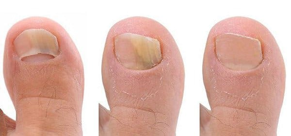
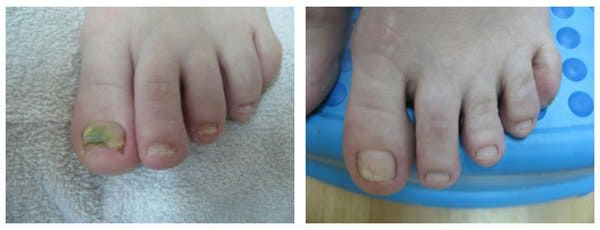
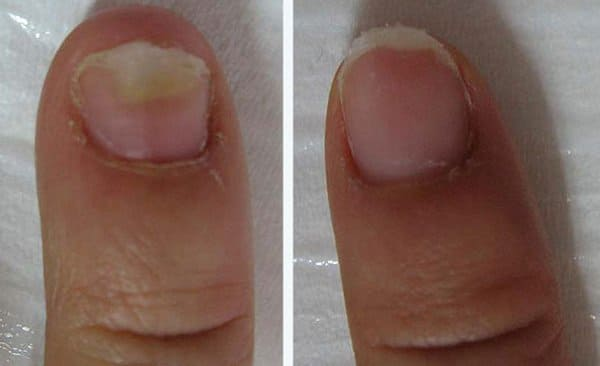
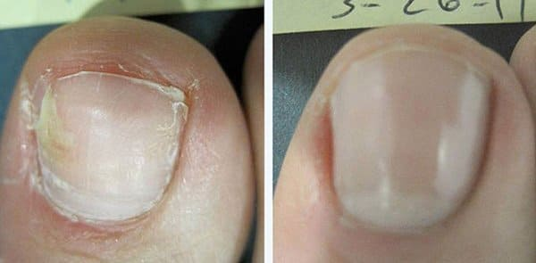

ZDROWIE
Grzybica stóp i paznokci jakie są związane z nią zagrożenia i jak się jej pozbyć?
Redakcja: Według statystyk 1 na 5 osób cierpi z powodu infekcji grzybiczej stóp i paznokci. Przyczynami może być niska odporność lub obuwie które nie pasuje do stopy.
Dziś, rozmawiamy z lekarzem podologiem Aleksandrem Kalińskim, który opowie nam jak osiągnięcia współczesnej nauki pozwalają pozbyć się tej nieprzyjemniej i groźnej choroby w domu. W trakcie jednego miesiąca.
Aleksander Kamiński: Chciałbym uświadomić państwu, że w przeciwieństwie do tego co niektórzy sądzą, grzybica nie jest jedynie problemem estetycznym, a może stanowić zagrożenie dla zdrowia.
Aleksander Kamiński w programie: "Zdrowie dla Ciebie" opowiada jak wyleczyć grzybicę stóp i paznokci
Grzybica paznokci lub z łaciny onychomycosis, może stać się poważnym zagrożeniem dla zdrowia jeśli nie będziemy jej leczyć. Może wywoływać reakcje alergiczne, powodować osłabienie układu odpornościowego, a także nasilenie chorób przewlekłych.
Oznacza to, że ten niewielki problem ze stopami może stać się niebezpieczny dla życia! Dlatego należy pamiętać o kilku rzeczach:
Po pierwsze, grzybica to nie tylko problem paznokci czy stóp, ale oznaka zaatakowania całego organizmu przez pasożyta. Zadomawia się on w naszym ciele i korzysta z niego by się odżywiać. Po drugie, sam grzyb nie spowoduje naszej śmierci, ale działa jako katalizator dla wszystkich innych chorób które już mamy.
Dlatego, jeżeli cierpimy na przewlekłe choroby, np. żołądka lub wątroby, wtedy jest duża szansa, że grzybica wprowadzi je w stan ostry. Wszystko przez to jak działa na nasz system autoimmunologiczny.
Aleksander Kamiński: Spróbujmy wymienić symptomy grzybicy
Jakie są pierwsze objawy grzybicy? Jak możesz sprawdzić czy coś Ci grozi?
Wymieńmy jej najważniejsze symptomy
- - rozwarstwianie powłok pomiędzy palcami (najczęściej między 1 i 2 lub 4 i 5 palcem)
- - guzy na skórze
- - swędzenie
- - zaczerwienienie
- - pieczenie
- - obrzmiałe palce, zniszczone paznokcie
Proces zaczyna się najczęściej w warstwach skóry między palcami. Łuszczy się, piecze i
swędzi.
Według naszych statystyk około 20% obywateli Polski cierpi z powodu grzybicy. Części pacjentów, we wczesnym stadium choroby jest relatywnie łatwo pomóc. Jeśli będzie nieleczona, rozwinie się i kuracja zajmie znacznie dłużej. Problemem jest także to, że nie wszyscy chorzy zgłaszają się do lekarza. Wiele osób myśli, że grzybica zaleczy się sama. Niestety, nie ma na to najmniejszej szansy. Nieleczona grzybica nie tylko nie zniknie, ale także rozszerzy się na inne palce i w końcu całą nogę.
Leczenie grzybicy nóg i paznokci
Przechodzimy do części głównej, czyli odpowiedzi na pytanie, jak wyleczyć ten rodzaj grzybicy? Tradycyjnym sposobem, często stosowanym w naszych klinikach, jest chirurgiczne usunięcie zarażonego paznokcia. Po tym zabiegu, stopa goi się przez około 2 miesiące. Według mnie to dość prymitywna metoda jak na XXI wiek, ale wielu lekarzy wybiera ją w 99% przypadków! Niech ci, którzy nie chcą rozwiązać tego problemu chirurgicznie, podniosą rękę.
Aleksander Kamiński Cóż, widzę w górze las rąk!
Na szczęście, obecnie jest dostępna już dużo wygodniejsza metoda leczenia. Którą próbujemy wprowadzić do stosowania w klinikach.
Prywatne placówki specjalistyczne oferują swoim pacjentom wiele różnych metod leczenia grzybicy. Jednak ich dużą wadą jest wysoki koszt takich procedur. Zazwyczaj zamyka się w około 3500 zł.
Nie przyszedłem jednak do studia by mówić tylko o negatywach. Dobrym przykładem bardziej optymistycznych wiadomości może być Agnieszka Wąsowicz, jeszcze miesiąc temu cierpiała z powodu poważnej infekcji grzybiczej, a teraz jest zdrowa. Wyleczyła ją dzięki specjalnemu kremu do stóp .
Gość programu
 Agnieszka Wąsowicz
Agnieszka Wąsowicz
Zaczęliśmy niezależne testy tego kremu w naszym ośrodku. Wyniki testów wskazują, że pomaga on wszystkim pacjentom. W 97% przypadków usuwał grzybicę bezpowrotnie. Po wyleczeniu krem może być stosowany zapobiegawczo, jako że ponowne zarażenie może się zdarzyć cały czas. Cena kremu jest około 30-40 razy niższa niż zabiegów w klinikach. A jego skuteczność jest nawet nieco wyższa.
Oto zdjęcia Agnieszki (była jedną z członków grupy testowej). Oto wyniki stosowania kremu przez 30 dni:
 Wyniki stosowania kremu w ciągu 30 dni
Jesteśmy na 100% pewni skuteczności kremu
Po pierwsze, jest to produkt opatentowany który przeszedł wszystkie wymagane testy. Po drugie, przetestowaliśmy produkt na naszych pacjentach ponieważ nie ufamy oficjalnym statystykom. Jak już pisałem, dało to wspaniały rezultat. Krem zawiera następujące składniki: klotrimazol, który ma działanie kojące i przeciwbakteryjne, usuwa świąd i zabija kolonie grzybicze. Miód pszczeli dezynfekuje i pomaga zmniejszyć ból. Witaminy rozluźniają i łagodzą zapalenie, a klotrimazol je leczy. Ostatni składnik, limonen, nadaje przyjemny zapach i wygładza skórę, co jest bardzo ważne po całym dniu ciężkiej pracy. Krem usuwa grzybicę (nawet w przypadkach, gdy konieczny wydawałby się zabieg chirurgiczny) i rozwiązuje wiele problemów, takich jak pieczenie, łuszczenie, ból i nieprzyjemny zapach.
To prawdziwe remedium które staje się coraz bardziej popularne na całym świecie. Nasze ministerstwo zdrowia zadbało o to, by produkt ten był dostępny w naszym kraju po cenach produkcji, tzn. by był sprzedawany po kosztach. Obywatele Polski powinni móc go nabyć za najniższą możliwą cenę. Teraz można go kupić w internecie. Każdy może łatwo złożyć zamówienie i kupić go do użytku domowego. Jest dostarczany kurierem lub pocztom (płatność po dostarczeniu i sprawdzeniu paczki), by go nałożyć nie trzeba żadnych specjalnych umiejętności.
Naturalny produkt do leczenia grzybicy stóp i paznokci
Obecnie produkt ten jest dostępny jedynie na stronie producenta. Negocjujemy z siecią aptek wprowadzenie do nich kremu , ale chcą one dużego narzutu na tym produkcie. Nasza pozycja, tak samo jak pozycja ministerstwa zdrowia, nie pozwala nam na zgodzenie się na to.
Czy są jakieś przeciwwskazania do stosowania kremu?
Krem nie jest lekiem chemicznym, dlatego nie ma przeciwwskazań. Podczas naszych testów zaaplikowano krem 17254 pacjentom w naszym centrum i nie odnotowano nawet jednej reakcji alergicznej na jego składniki. Krem nie jest szkodliwy dla zdrowia, a jednocześnie zwiększa odporność organizmu na różne rodzaje grzybicy. Wartym wspomnienia jest także, że może być bezpiecznie stosowany przez dzieci.
Dlatego pojawienie się tego preparatu jest bardzo dobrą wiadomością. Grzybica stóp i paznokci to nie tylko problem estetyczny, to poważna choroba która może prowadzić do fatalnych konsekwencji. Powinno się leczyć ją jak najszybciej, zanim nie jest za późno.
PS Producent zgodził się za naszą namową obniżyć koszt kremu, teraz można zamówić za pół ceny!
Życzę więc zdrowia i do następnego razu!
Aleksander Kamiński w programie "Zdrowie dla Ciebie"
Zamówiłam ten krem. Moje paznokcie były w strasznym stanie, myślałam, że będzie trzeba je rwać. Ale po tym jak korzystałam z kremu przez 30 - 40 dni, moje paznokcie wróciły do normy! Nie wyobrażacie sobie jaka byłam szczęśliwa :)
Kiedy zacząłem używać kremu, nie spodziewałem się, że efekty będą takie wyraźne. Bardzo się cieszę, że rozwiązałem swój problem i pokonałem grzybicę!
Zamówiłam i przyszedł już drugiego dnia. Zakończyłam leczenie i jestem zdrowa. To straszne, że żyłam z grzybicą tak długo.
Stosuję krem od dwóch tygodni, dziś jest szesnasty dzień, a wyniki są super! Próbowałam wielu innych kremów wcześniej, prawie się otrułam lekami przeciwgrzybicznymi, a moje paznokcie dalej były zaatakowane grzybem. Teraz jestem taka szczęśliwa! Zrobiłam zdjęcie "przed" i "po" zobaczcie różnicę:

Też zamówiłem, podobno ma dość w tydzień. Nie mogę się doczekać.
Miałam już poważne zakażenie grzybicze, pozwoliłam na to bo myślałam, że to nic poważnego. Dopiero gdy moje żylaki znacznie się pogorszyły, zorientowałam się, że coś jest nie tak. Lekarze sugerowali operację laserową. To kosztowałoby około 1000 zł za sesję, a miało być ich 8! Na rękę mam 800 zł miesięcznie, nie mogłam sobie na to pozwolić. Nie mogłabym też nie być w stanie chodzić przez miesiąc. Próbowałam różnych domowych sposobów ale nic nie pomagało. W końcu trafiłam na . Zamówiłam go chociaż nie wierzyłam za bardzo, że pomoże. Ale grzybica zniknęła dzięki niemu w 1,5 miesiąca! Zupełnie! Nie dawałam wiary, że się jej tak łatwo pozbyłam. Dlatego chciałam Wam tak bardzo podziękować! Przepraszam, że tyle gadam ale jestem bardzo wdzięczna, naprawdę.
Ludzie z grzybicą stóp mają szczęście! Wyobraźcie sobie, że ja swoją miałam na ramionach czujecie jakie to było obrzydliwe? Ludzie się mnie wprost bali! Okropne uczucie, byłam strasznie zażenowana. Ale nie mogłam jej niczym wyleczyć. Teraz używam kremu (od 2 tygodni) i zobaczcie rezultaty! 
Zamawiam go regularnie. Moja cała rodzina z niego korzysta. Bardzo pomógł synowi z jego problemem.
Kupiłem go bo miałem grzybicę, cierpiałem na nią bardzo długo i miałem już dość. Zacząłem stosować i zniknęła w pare tygodni, wszystko.
Bardzo ciekawy wywiad, dziękuję! Pomagacie otworzyć ludziom oczy!
To nie jest ściema? Dlaczego sprzedają to tylko przez internet?
Wiktoria, czy ty przeczytałaś w ogóle artykuł? Sprzedają go w internecie bo gnojki z aptek chcą na nim zarobić! Jak to mogła by być ściema jeśli płacisz przy odbiorze? Zamówiłam go, przyszedł kurier, sprawdziłam paczkę i zapłaciłam. Jeśli się zamawia przez pocztę to tak samo, płatność przy odbiorze. Poza tym, dziś już wszystko sprzedają przez internet.
Przepraszam nie zauważyłam informacji o tym, że to jest płatne przy odbiorze. Skoro tak to jest zupełnie bezpieczne, ja też zamówie.
Też podzielę się moją radością. Odkąd zachorowałem paznokcie miałem ciągle uszkodzone i mnie bolały. Próbowałem leczyć to tabletkami, maściami itd. Nic nie dawało długotrwałego efektu. Teraz używam i możecie zobaczyć skutki na zdjęciach. Trzy tygodnie stosowania za mną ale na wszelki wypadek jeszcze będę smarował tydzień. 
Dziękuję za radę. Nareszcie pozbyłem się grzyba. Za dużo takich pierdół utrudnia nam życie :)
Przeczytałam opinie i zrozumiałam, że też muszę kupić :) Uciekam złożyć zamówienie.